飲控隨身記 使用說明
手機上的飲食記錄，給你自己和營養師一起看。免費、不用註冊帳號；記的東西存在你自己的手機和你自己的 Google 雲端硬碟。
每個功能都有畫面和一個生活中的例子（📖 情境），照著做一次就會了。畫面裡的人和數字都是示範用的。
1. 安裝到手機
飲控隨身記是「網頁 App」，不用到 App Store 或 Play 商店下載。用手機的瀏覽器打開網址，再「加到主畫面」，之後就和一般 App 一樣，從桌面的圖示打開。
網址：https://ericckfeng.github.io/jjcat/
🍎 iPhone、iPad
- 用 Safari 打開上面的網址。
- 按下方的 分享（方框加向上箭頭）。
- 往下滑，按 加入主畫面 → 新增。
🤖 Android
- 用 Chrome 打開上面的網址。
- 按右上角 ⋮。
- 按 安裝應用程式（或「加到主畫面」）。
加好之後，長按 App 圖示可以直接打開「我的食物」「拍照記」「喝水」「量體重」。
💬 從 LINE 點連結的話
LINE 會用它自己的瀏覽器打開，不能登入 Google、也不能加到主畫面。
請按右上角選單，選 用預設瀏覽器開啟（或「在 Safari／Chrome 開啟」），再照前面的步驟做。
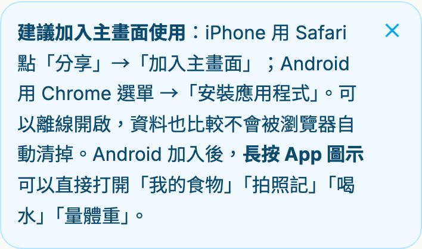
2. 第一次打開
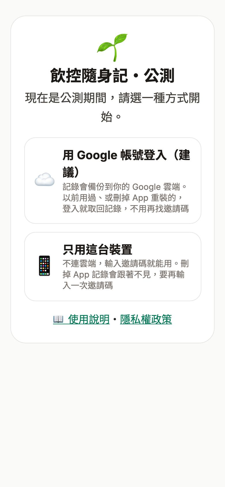
公測期間：選一種方式開始
☁️ 用 Google 帳號登入（建議）：記錄會自動備份到你自己的 Google 雲端硬碟。
- 第一次用：登入後輸入邀請你的人給的邀請碼，例如 JJ-4821 只要填 4821，按 確認，再填你的姓名，按 開始使用。
- 以前用過、換了新手機、或不小心刪掉 App：登入後會取回記錄，不用再輸入邀請碼。
📱 只用這台裝置：不連雲端，輸入邀請碼和姓名就能用。刪掉 App 記錄會跟著不見，要再輸入一次邀請碼。之後想備份，可以到「⚙️ 設定 → 資料與備份」連結 Google 雲端。
一組邀請碼可以用在你自己的 3 台裝置（手機、平板、電腦）。第二台輸入同一組碼時，會帶出你登記的姓名。
只會把邀請碼、姓名和裝置名稱（例如「iPhone」）送給公測管理者，用來管理公測人數；你的飲食記錄不會送出去。
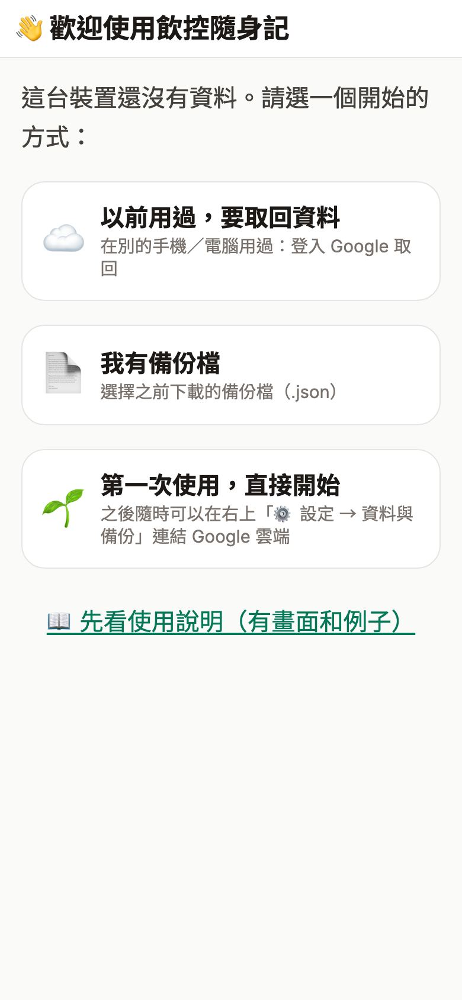
選一個開始的方式
- 第一次使用，直接開始：大部分的人選這個。之後隨時可以在 ⚙️ 設定 → 資料與備份，連結 Google 雲端。
- 以前用過，要取回資料：換手機、在電腦上也想看，選這個，用同一個 Google 帳號登入，資料就回來了。
- 我有備份檔：手上有以前下載的備份檔（.json）時用。
接著到右上角 ⚙️ →「我的基本資料」填身高、出生年；「每日目標」填營養師給的熱量和份數（沒有的話，可以按「依體重試算」）。
3. 首頁看什麼
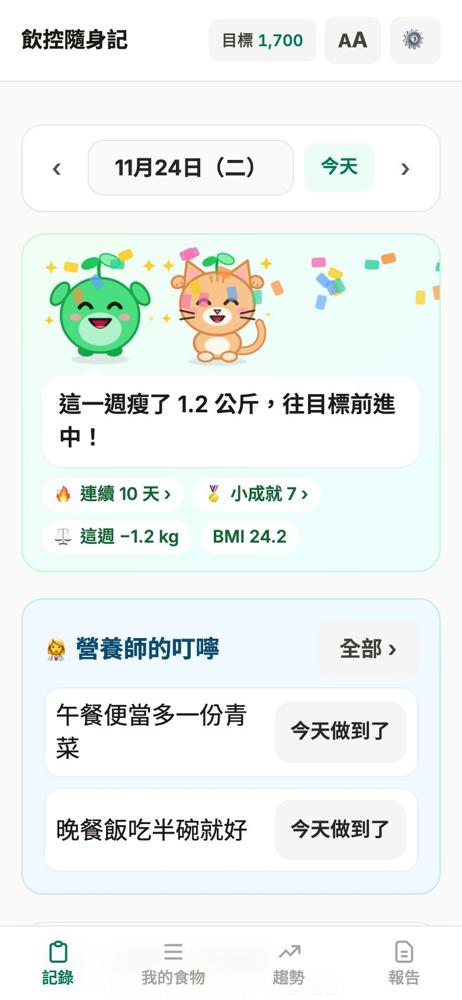
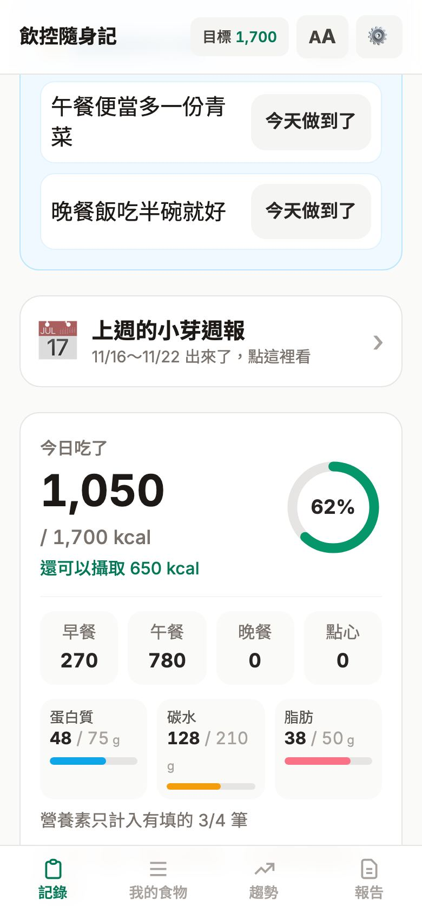
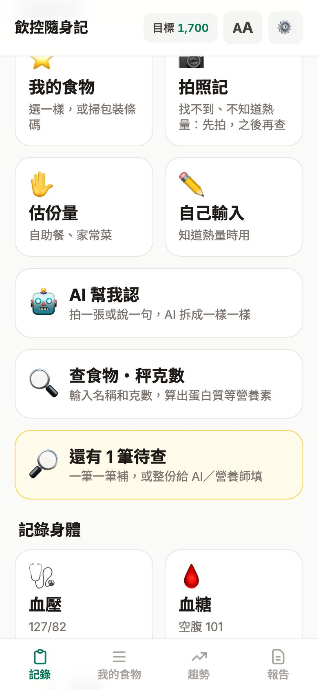
- 日期：按 ‹ › 看前一天、後一天；忘了記昨天的，切到昨天再記。按「今天」回來。
- 小芽、小貓、營養師：會稱讚你、提醒你（例如喝水、蛋白質）。點一下換下一句。不喜歡可以在設定關掉。
- 今天吃了：熱量圈圈、三餐各吃多少、蛋白質碳水脂肪。
- 右上角 AA 換字體大小（標準／大／特大），⚙️ 是設定。
- 最下面四個分頁：記錄（首頁）、我的食物、趨勢、報告。
4. 記錄吃的（六種方法，挑順手的用）
不用每一種都學。不知道熱量就「拍照記」，常吃的存成「我的食物」，這兩個就夠用了。
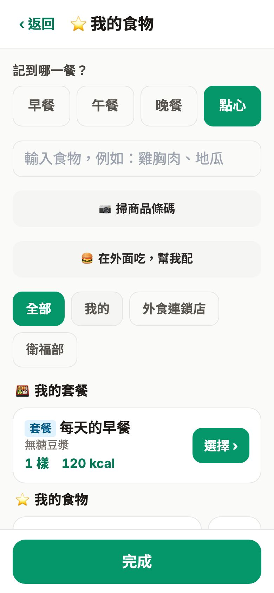
⭐ 我的食物：常吃的，點一下就記好
- 首頁按 ⭐ 我的食物，上面先選「哪一餐」。
- 點一樣食物 → 填吃了多少（預先填好平常的份量）→ 加入這一餐。
- 可以連續選好幾樣，最後按 記到早餐。
新增：按「＋ 新增我的食物」，照包裝上的營養標示填一次就好。旁邊的 ✏️ 可以改名字、改數字。
套餐：常一起吃的幾樣（例如每天的早餐），選好後按「存成套餐」，下次一按整組放進來。
掃條碼：按「掃商品條碼」拍包裝上的條碼，存過的會直接找到。
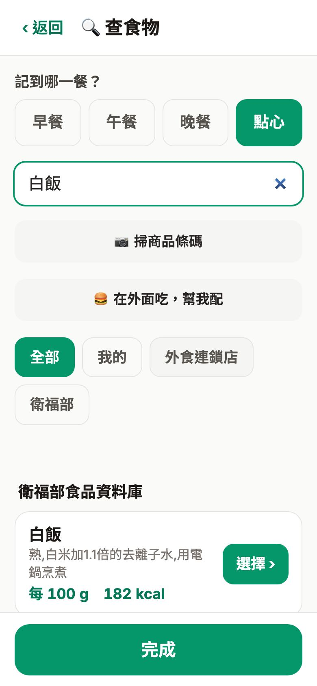
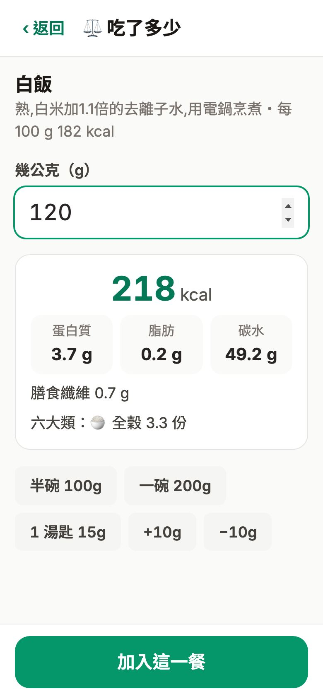
🔍 查食物・秤克數：自己煮的、生鮮食材
- 首頁按 🔍 查食物・秤克數，打食物名稱（例如「白飯」「雞胸」「地瓜」）。
- 點選結果，填克數（有「半碗」「一碗」等快速按鈕）。
- 熱量、蛋白質、六大類份數自動算好 → 加入這一餐。
資料來自衛福部的食品營養成分資料庫；生的、熟的重量可以切換。你匯入的外食資料庫也會一起查到。
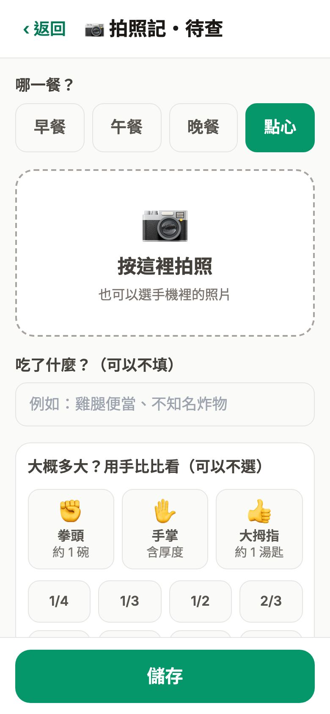
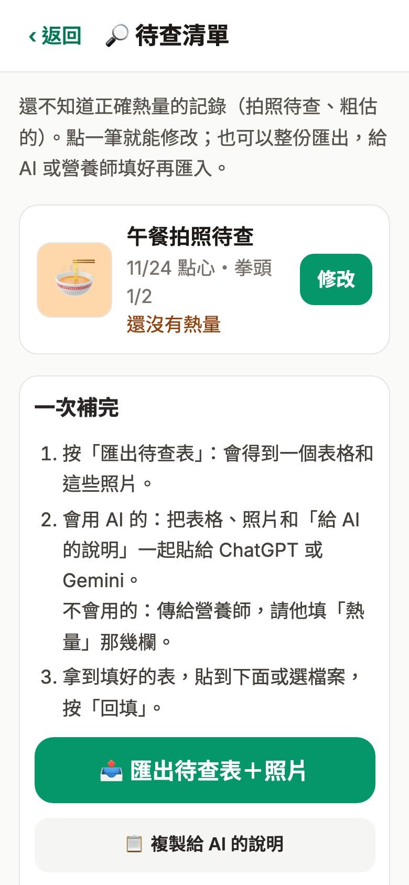
📷 拍照記・待查：不知道熱量，先拍起來
- 首頁按 📷 拍照記，拍一張（最多 3 張）。
- 可以用手比大小（拳頭、手掌、大拇指 × 幾個）、選類別，App 先給一個粗估。
- 按 儲存，這筆會標「待查」。
之後首頁會出現「🔎 還有 N 筆待查」：
- 一筆一筆點進去改；或
- 按 匯出待查表＋照片，連同「給 AI 的說明」一起丟給 ChatGPT／Gemini，或傳給營養師填 → 把填好的表格貼回來、按 回填。
- 回填時，查到的食物可以順便存成「我的食物」，下次吃一樣的直接選。
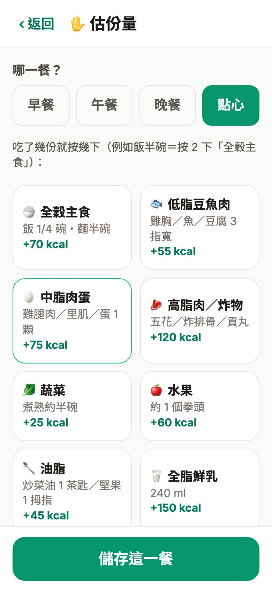
✋ 估份量：自助餐、家常菜
用營養師教的「份」來估：吃了幾份就按幾下，每個按鈕下面寫一份是多少（例如全穀主食一份＝飯 1/4 碗，所以半碗按 2 下）。熱量和六大類份數自動加總。
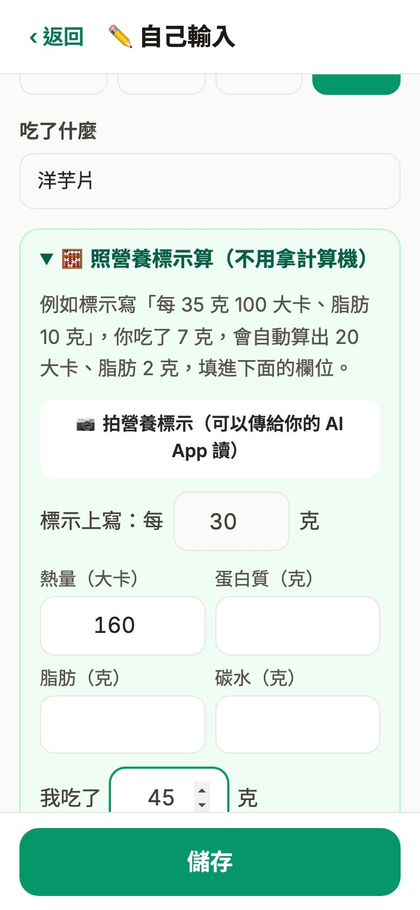
✏️ 自己輸入：知道熱量時、照營養標示算
直接填名稱和熱量。包裝食物展開 🧮 照營養標示算：填標示上「每 30 克 160 大卡」，再填「我吃了 45 克」，自動換算，不用拿計算機。
勾「也存到我的食物」，下次就不用再填（要先填名稱）。
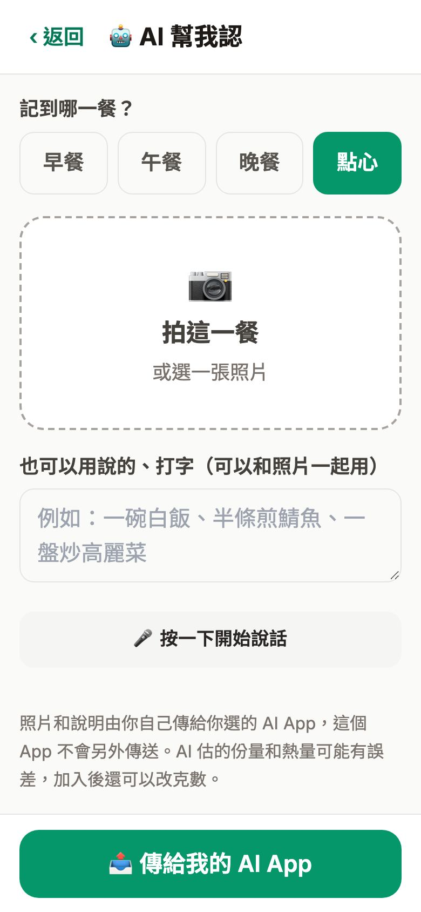
🤖 AI 幫我認：拍一張，AI 拆成一樣一樣
要先在 ⚙️ 設定 →「AI 辨識」打開。兩種方式擇一：
- 用自己的 AI App（不用 Key）：拍照 → 按「傳給我的 AI App」→ 在 ChatGPT／Gemini 長按輸入框「貼上」、送出 → 把 AI 的回答複製貼回來。
- Gemini API Key：貼上自己的免費 Key，拍完 App 直接辨識。
AI 估的份量可能有誤差，加入前可以改克數。照片和文字只會傳到你自己選的 AI。
5. 外食怎麼點
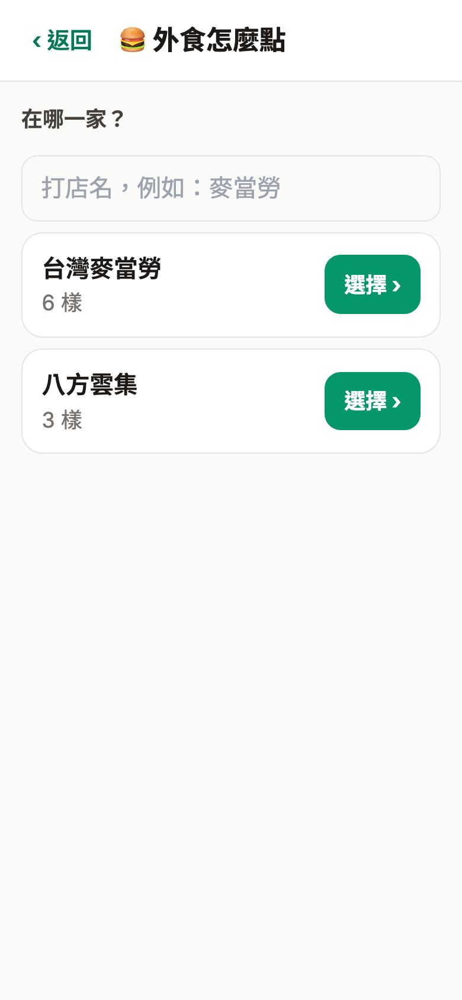
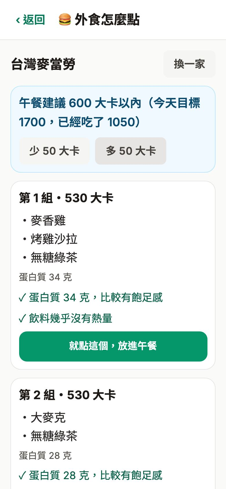
- 首頁 🔍 查食物，選好哪一餐，按 🍔 在外面吃，幫我配。
- 選店家（可以打字找）。
- App 算出「這一餐建議幾大卡以內」（依你今天的目標和已經吃的），排出 3 組點法：蛋白質多、糖少的在前面。可以按「多／少 50 大卡」調整。
- 按 就點這個，整組放進這一餐，可以再改、再記。
要先有店家的資料（見下一節「食物資料庫」）。店家出新菜，按「＋ 這家有新菜」存進去。
6. 我的食物、食物資料庫
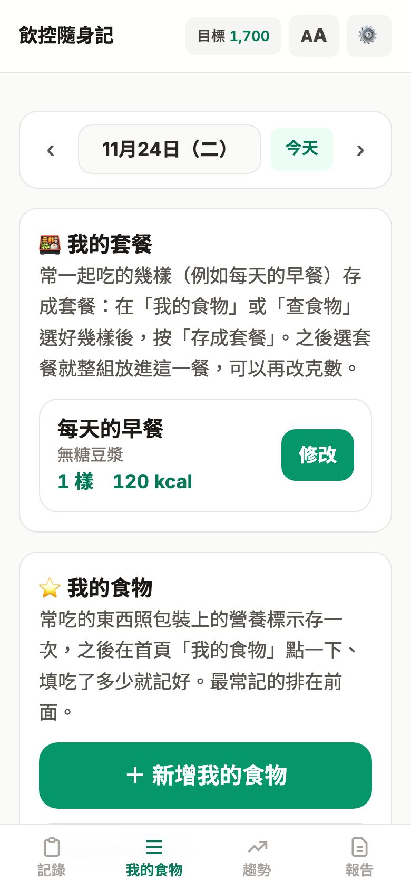
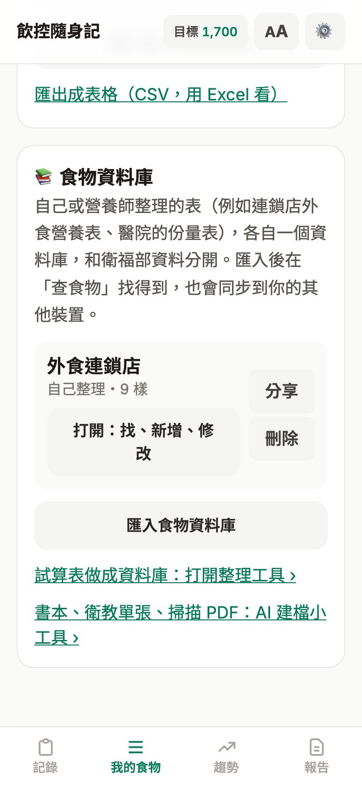
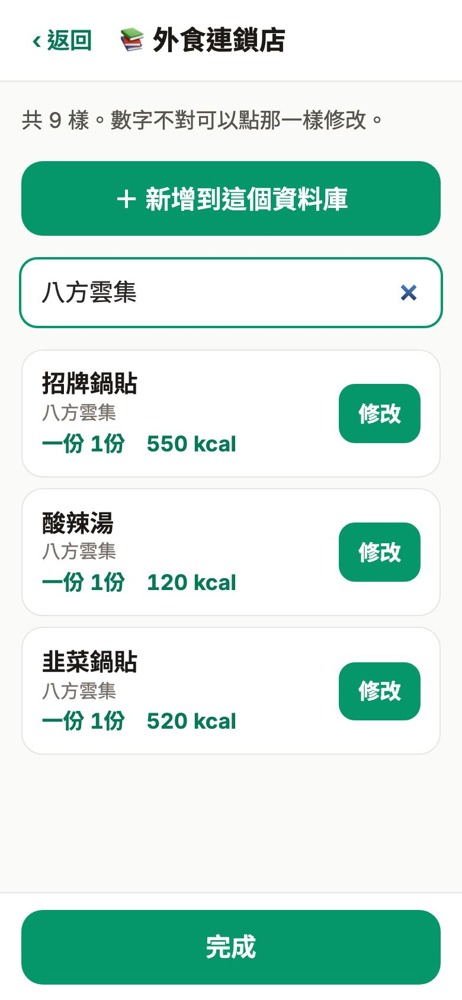
- 我的套餐、我的食物：在這裡新增、修改、刪除；可以「分享」給家人或營養師（傳 LINE），對方「匯入」就有一樣的。
- 食物資料庫：一大份整理好的表（例如連鎖店外食營養表、醫院的份量表）。用「整理工具」把 Excel 表做成資料庫檔，再「匯入」。查食物、外食怎麼點都會用到。
- 打開資料庫可以搜尋、新增、修改。原本的數字不對，改了之後查到的就是你改的；不要了按「恢復原本的」。
- 我的食物太長：按「☑️ 選幾樣」勾外食的 →「移到資料庫…」選一家店，我的食物清單就變短了。
7. 記錄身體、功能開關
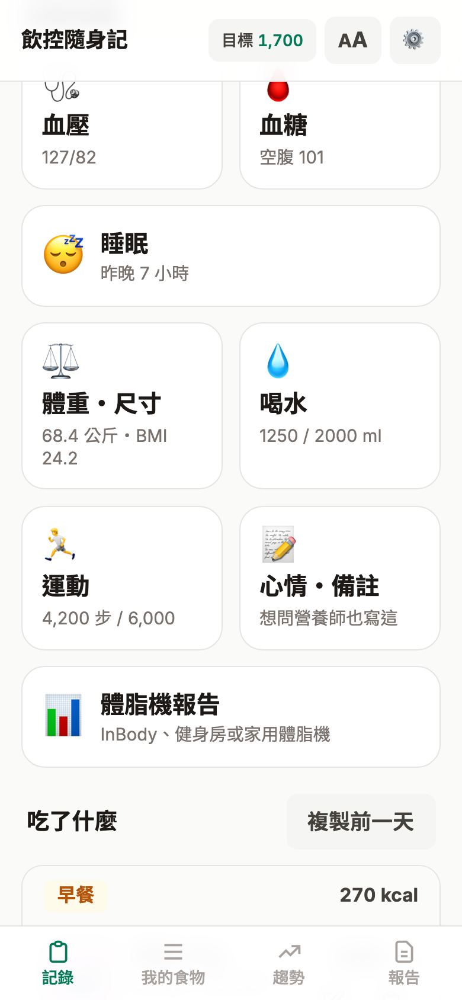
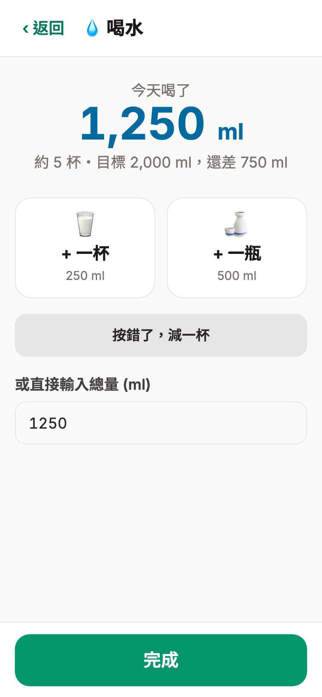
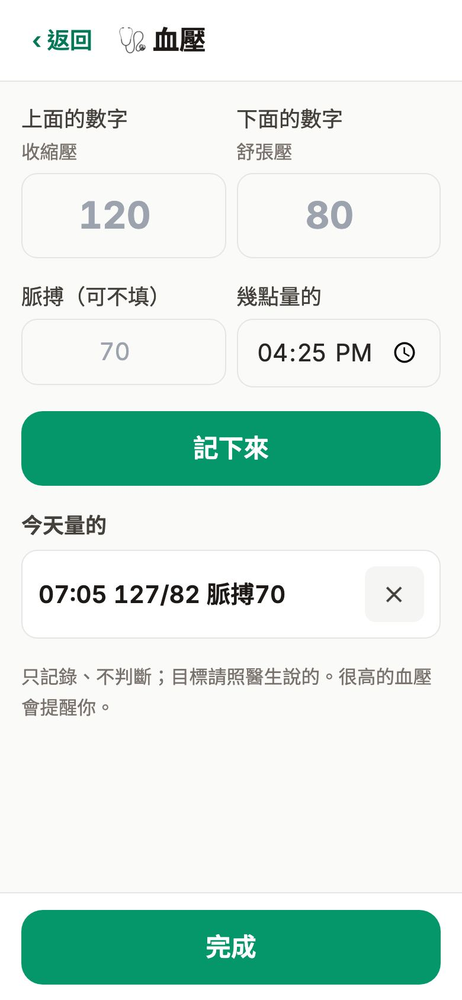
- 體重・尺寸：每天早上量一次最準；BMI 自動算。趨勢看 7 天平均，不用被一天的上下嚇到。
- 喝水：喝一杯按一下「+ 一杯」。
- 運動・步數：寫做了什麼、幾分鐘；步數看手機健康 App 或手環，自己填。
- 睡眠：幾點睡、幾點起床；午睡算補眠。
- 心情・備註：今天的心情、飢餓感、排便；想問營養師的話也寫這裡，報告會列出來。
- 體脂機報告：InBody 等的體脂率、骨骼肌、基礎代謝。
- 血壓、血糖：預設關閉，要用請到功能開關打開。只提醒明顯危險的數字（很高的血壓、低血糖），其他只記錄，目標照醫生說的。
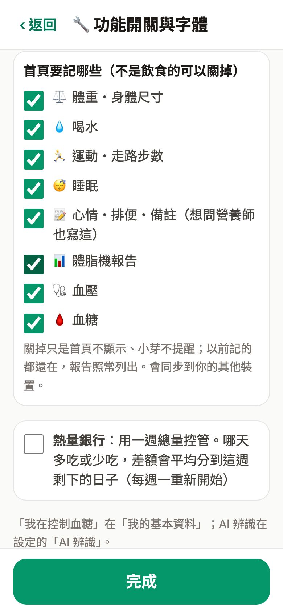
🔧 功能開關：只想記吃的，把其他關掉
⚙️ 設定 →「功能開關與字體」→「首頁要記哪些」。不用的取消勾選，首頁就不顯示、小芽也不會提醒；以前記的資料都還在。
同一頁還有：字體大小、陪伴角色（小芽、小貓、營養師，可以複選或都不要）、熱量銀行（一週總量控管）。
有糖尿病的阿姨：在「我的基本資料」勾「我在控制血糖」，血糖就會打開，空腹、飯後兩小時分開記。
8. 和營養師一起：叮嚀、報告
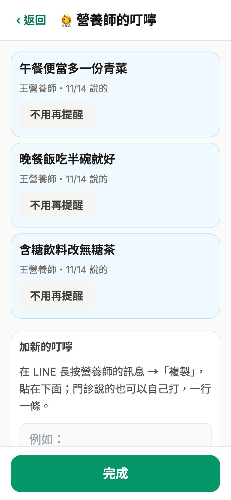
👩⚕️ 營養師的叮嚀：每天提醒、做到就按
- 下方 報告 分頁 →「營養師的叮嚀」。
- 在 LINE 長按營養師的訊息 →「複製」，貼進來，按「整理成一條一條」。門診說的自己打，一行一條。
- 看一下、改一改 → 存起來。
首頁每天輪流提醒 2 條，做到了按 今天做到了。給營養師的報告會列出每一條「做到幾天」。
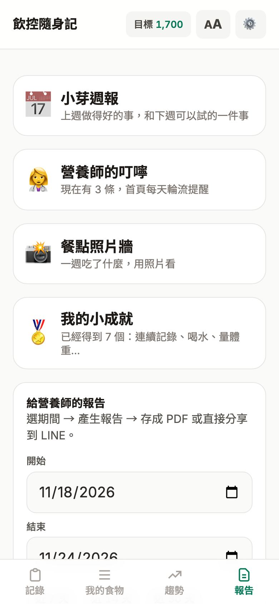
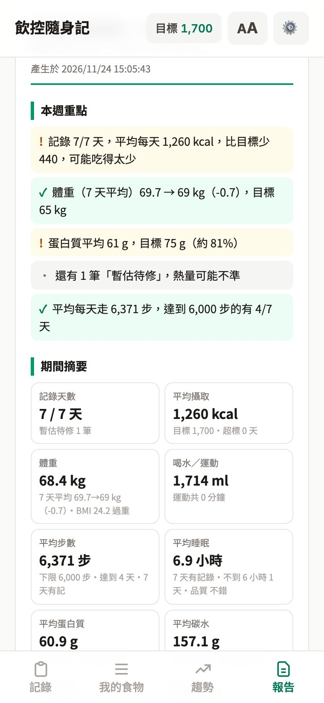
📄 給營養師的報告
- 報告分頁 → 選期間（近 7、14、30 天）→ 產生報告。
- 可以 列印／存成 PDF、分享報告檔（營養師用任何瀏覽器都能打開），或 分享文字摘要（直接貼 LINE）。
報告最上面是「本週重點」，接著是平均熱量、三大營養素、六大類份數、體重、喝水、步數、睡眠、血壓血糖、叮嚀做到幾天、你想問的問題，最後是每天吃了什麼（可以附照片）。
9. 回頭看：趨勢、照片牆、週報、小成就
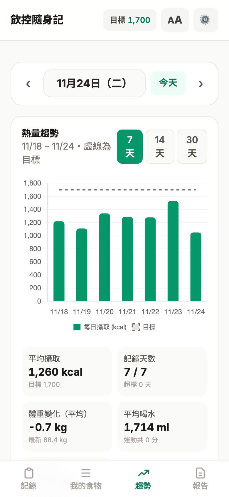
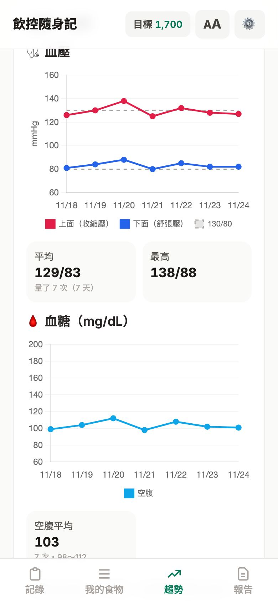
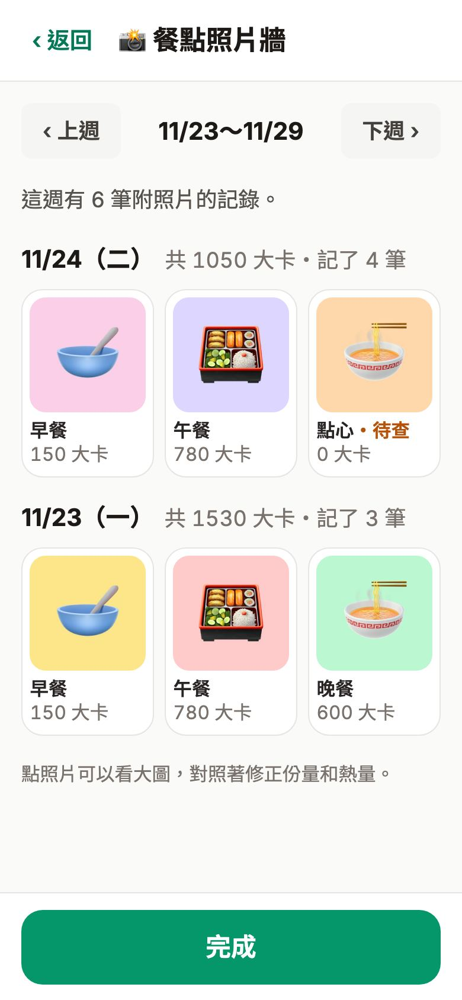
- 趨勢（下方分頁）：7／14／30 天的熱量、體重（粗線是 7 天平均）、睡眠，有記的話還有血壓、血糖。還會告訴你「睡飽的日子平均吃多少、沒睡飽的日子吃多少」。
- 餐點照片牆（報告分頁）：一週吃了什麼，用照片看；點照片看大圖、修正。
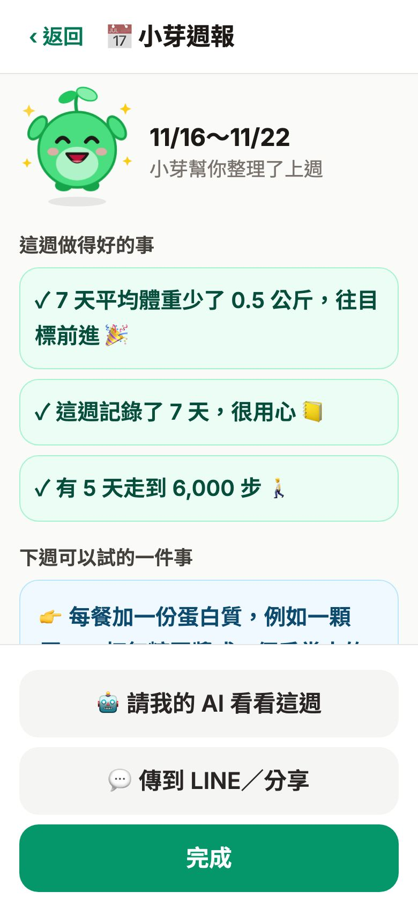
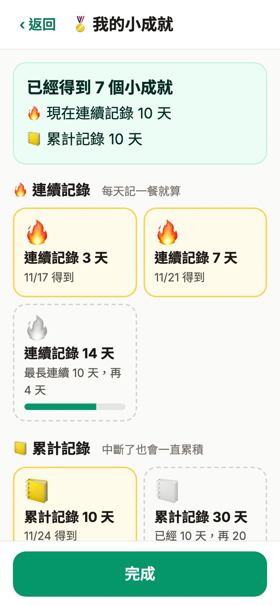
- 小芽週報：每週一出來，列上週做得好的事和下週可以試的一件事，可以傳 LINE 分享。
- 🤖 請我的 AI 看看這週（有開 AI 才有）：把上週的摘要和每天吃了什麼傳給你的 AI App，AI 會回你做得好的地方、下週可以試的小事、外食怎麼點比較好。
- 我的小成就：連續記錄、喝水達標、走路達標、體重前進…得到新的會放彩帶 🎉
10. 資料安全、備份
☁️ 雲端同步（建議）
⚙️ 設定 → 資料與備份 →「用 Google 帳號連結」。之後自動同步，資料存在你自己的 Google 雲端硬碟「飲控隨身記」資料夾，開發者看不到。
💾 下載備份
不想連 Google 的話，同一頁可以按「下載完整備份（含照片）」，存到檔案或傳給自己。換手機時在歡迎畫面選「我有備份檔」。
🔔 備份提醒
超過 7 天沒備份、或雲端 7 天沒同步成功，首頁會提醒。按「晚點」3 天內不再出現。
隱私：記錄只在你的裝置和你自己的雲端硬碟。只有你自己開 AI、按下辨識時，那張照片才會傳到你選的 AI；掃條碼查不到時只送出條碼號碼。詳見隱私權政策。
11. 常見問題
邀請碼不能用、說「已經停用」或「已經用在 3 台裝置上」？
請向邀請你的人要新的邀請碼。你的記錄都還在，輸入新的邀請碼就能繼續用。換了新手機用滿 3 台，也可以請他幫你把不用的那台刪掉。
要錢嗎？
不用。App 免費，不用註冊。AI 功能用你自己的 ChatGPT／Gemini（免費版就可以）。
家人可以一起用嗎？
可以，每個人用自己的手機、自己的 Google 帳號。同一個人在手機、平板、電腦都想看，就都連結同一個 Google 帳號。
首頁出現「有新版本，按更新」？
按「更新」就好，記的資料不會不見。有時候還會請你在每一台用過的裝置都更新一次，才能繼續同步。
畫面空白、按了沒反應？
先確認有網路，把 App 完全關掉再打開。還是不行，到 ⚙️ 設定 → 關於，看版本是不是最新的，按「更新到最新版」。
字太小、按鈕太小？
右上角 AA 可以換成「大」或「特大」。
記錯了怎麼辦？
首頁下面「吃了什麼」，每一筆旁邊有修改和刪除。刪錯了，畫面下方的提示可以按「復原」。
在 LINE 裡打不開、不能登入 Google？
LINE 的瀏覽器不能登入 Google。按右上角選單 →「用預設瀏覽器開啟」，改用 Safari 或 Chrome。
熱量一定準嗎？
都是估計值：衛福部資料庫、店家公布的數字比較準；手掌法、AI 是粗估。重點是持續記、看趨勢，和營養師一起調整。有疾病或吃藥的人，飲食和目標請聽醫生、營養師的。
發現問題、有建議？
請告訴邀請你參加公測的人，附上截圖和「⚙️ 設定 → 關於」裡的版本號，會比較快找到原因。